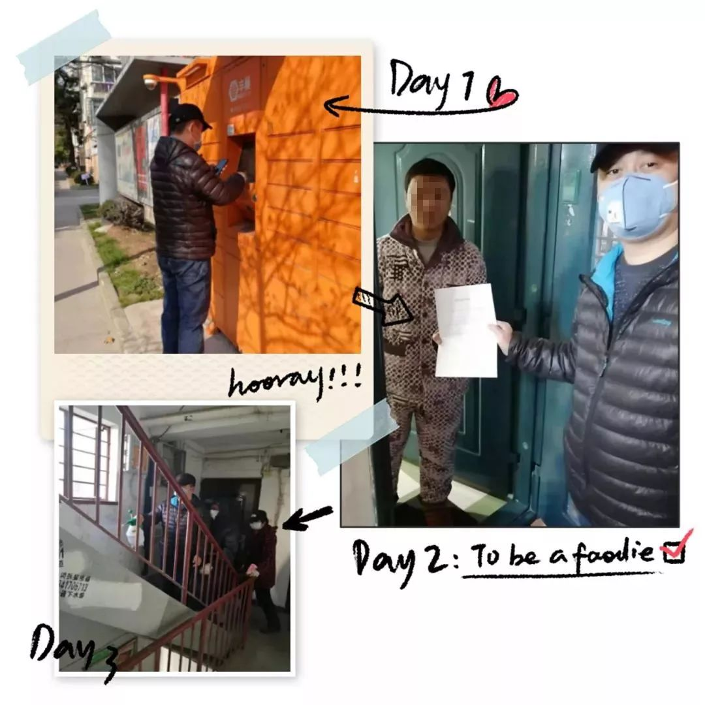
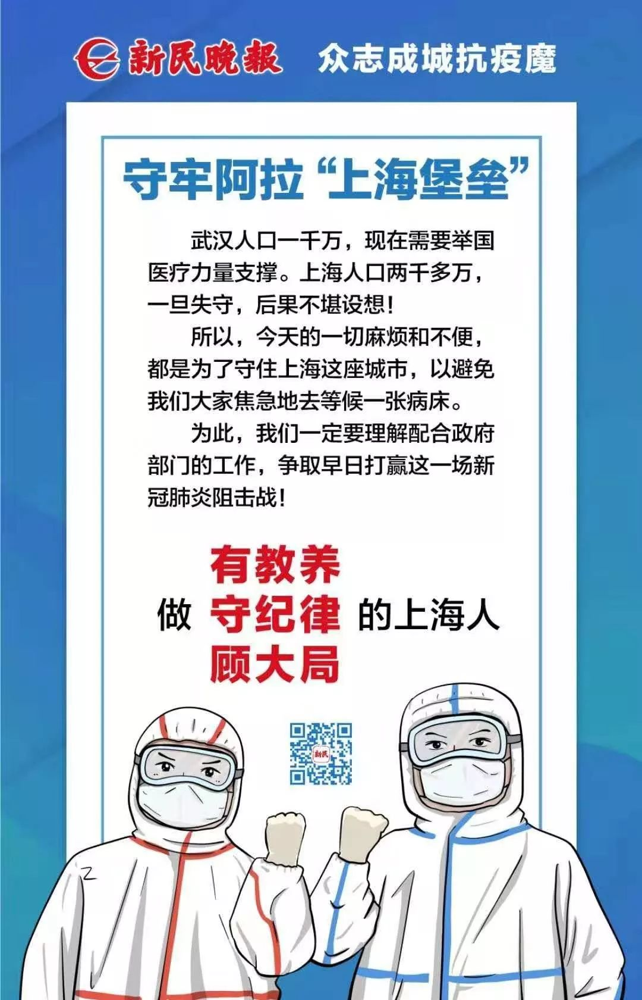

疫情总动员，各地怎么做|复工返程仍遇阻
原文链接 备份链接 【财新网】（记者 张兰太）新冠疫情仍在发展，然而年后企业复工、人员返程已经开始，如何在企业抓紧复工、人员加快流动的同时加强防控、避免疫情扩散，成为摆在各级政府、各个部门乃至每个企事业单位面前的一道难题。 人员返程，“硬 …

面对依然紧张的防疫形势，上海的街道、居民区、楼宇不断放出防疫大招，以上海人特有的智慧筑起“上海堡垒”，守卫这座城市。
文 | 陈 冰
2月10日是上海正式意义上的“复工日”，在经历了一个史无前例安静春节之后，人员返程、企业复工，面对依然紧张的防疫形势，上海的街道、居民区、楼宇不断放出防疫大招，以上海人特有的智慧筑起“上海堡垒”，守卫这座城市。
_
奉贤区：用无人机筑起“结界”
“有没有湖北回来的？”“有没有出去玩路过武汉的？”“有没有发烧、咳嗽的?”“鄂字开头的车辆有没有？”1608户，4700多位居民，在新型冠状病毒感染肺炎疫情全国拉响警报的同时，金海街道金水苑居民区的防疫战役也打响了。
1月26日，经过一番摸排，金水苑居民区党支部书记、居委会主任陆杰和他的战友们确定了6户为重点居家隔离的人员，确定好定点联系人，并建立微信群，保证随时可以沟通情况。
让陆杰印象最深的是大年初三晚上，居家隔离对象王某的凌晨来电。“大约快晚上3点不到，他突然来电话说小孩子发烧了。我赶忙戴好口罩赶到他家，把小孩子送医院治疗。一直陪着小朋友做完各类检查，医生最后确诊是支气管炎，不是新冠病毒感染肺炎。大松了一口气，天也亮了。”
居家隔离的这些天，隔离居民们的食品、药物、日常生活用品的采买等居委会的干部们全包了，5楼、6楼一天跑上跑下好几次，甚至还帮一户居民家里的小朋友打印了寒假作业。
陆杰说：“我过去是军人，现在虽然不穿军装了，但社区一样也是我的战场。”十几天没有休息过的陆杰却因为女儿的一封信而哽咽了。
_
_
_
_
亲爱的爸爸：
晚上好呀！
自新型冠状病毒感染肺炎疫情以来，您就没有出现在我们家的餐桌旁，您不厌其烦地给湖北返乡的居民打电话确认情况。自大年三十起，您的春节休假就“不翼而飞”了，本该一家人团圆，取而代之的是在一栋栋居民楼中穿梭。您虽不是站在疫情防控的最前线，但也为疫情的防控做了至关重要的贡献。在防疫面前，在一场没有硝烟、看不见敌人的战场上，您无私奉献着自己，您全副武装，逆风前行的身影让我肃然起敬，那种舍小家为大家的精神，真是个伟大的逆行英雄。
此致
敬礼！
爱你的女儿杨慧娴


2月7日晚7时30分，一架无人机绕着悦达南郊华都小区来回飞了好几圈，时高时低，时快时慢，操控无人机的是个小伙子，旁边站着小区综合管理办负责人、屠家村书记、小区物业经理等。“拍得清楚吗？”一群人在这个冬夜的寒风里站着，格外显眼。
到底在拍什么？
原来是小区综合管理办这两天在紧锣密鼓地排摸外地入（返）奉贤人员信息，怕有遗漏，就想到了晚上看亮灯的办法，但是，小区的楼层有29层，靠人工数灯实在困难。小区增援单位、区文化执法大队得知情况后，主动帮忙联系了无人机，航拍居民楼，再看着照片一家家排摸登记人员信息。
无人机+移动音响+小喇叭的全方位立体式宣传也上阵了。“重要的事情说三遍，隔离期间不要出门！不要出门！不要出门！”近日来，金水苑地区上空不时传来“不要出门”的宣传语，抬头望去，空中有架绑着小喇叭的六旋翼无人机，围着4个小区在不停地飞，边飞边循环播放宣传告示。
居委工作人员拿着移动音响循环播放宣传告示+志愿者拿着小喇叭巡逻+空中无人机喊话，这波全方位立体式的宣传，就问在家的你，
有没有听到！
_
宝山区：“特派快递员”上岗，
保障隔离居民生活
随着疫情的发展，基层防控工作强度不断加大，宝山区宝钢六村党总支高璐书记向支部主动请缨，一人负责起整个小区危险系数最高的工作：全力保障好小区内武汉回沪居家隔离人员的正常生活。
除了提醒测量体温，帮助买药、买菜、买水果，甚至帮拿快递、送面膜都成为了他的新增“服务”内容。这个“特派快递员”除了跑腿勤快、服务到位之外，还加了隔离人员的微信，每天通过观察微信步数管控隔离人员居家隔离情况！关心隔离人员的心理状况也成为高书记非常重要的一项工作内容，“他们安全，居民更有安全感呐”。

口罩告急。怎么办？由于宝钢六村小区老年人较多，考虑到排队购买口罩容易存在非常高的交叉感染风险，高书记果断拍板——开通社区通留言板块报名以及手机电话短信报名通道。通过预约登记，居委会工作人员电话通知排号居民，分流取购买口罩凭证。“线上预约+线下取单”的方式，不仅减少人员交叉感染风险，还进一步避免了排不到号、第二天继续排队的尴尬。这一方式，得到居民的一致叫好。
连日来，社区干部白加黑、连轴转，奔波在排摸、宣传、预约口罩、服务保障居家隔离人员等各个一线环节，怎样才能让他们“喘口气”“歇个脚”呢？
针对居委书记连续多日高强度超负荷作战、已显疲态，出现低烧、头晕、乏力等不适情况的问题，宝山区友谊路街道党工委一方面从街道机关遴选优秀年轻干部下沉居委提供支撑，另一方面精心选派多名“立方工作室”老书记担当“临时书记”，重出江湖到工作量比较大、比较困难的居民区报道。
龚秋慧就是友谊路街道居民区退休的老书记，曾经历过“非典”疫情，有着丰富的应急处置工作经验，作为“临时书记”，他迅速上岗，带领居委干部做好人员摸排、口罩登记、报表统计等工作。
_
长宁区：“人防+技防”把牢关口

天山商圈拥有金虹桥、远东国际、安泰、盛高、思创、同达、捷运、长房国际等商务楼宇。据统计，2月10日天山商圈各楼宇复工率在25%—30%之间，复工人员约占总数的1/4，1.5万人左右。前期，商务楼宇、街道就对首日复工情况作出预判，制定了防控预案和应急方案。除了在楼宇1楼大堂对进入办公楼人员体温检测，做到进人必查，体温正常并佩戴口罩方可进入之外，办公楼暂不接待访客，若租客有特殊需求，需自行下楼接待。

商圈在楼宇进出口、电梯、企业门前张贴回沪人员登记二维码，在1楼设立专门区域，供书面登记，双管齐下，确保不遗漏。送快递、外卖人员一律不得进入办公楼，在一楼公共区域或楼宇门前广场设立公共区域，分类放置，企业员工需到楼下进行交接。为了避免废弃口罩产生二次污染，金虹桥等楼宇还在1楼放置口罩专用垃圾桶，楼宇物业负责每天对回收桶进行处理，确保清洁。
部分企业响应延期开工，调整复工时间，如尚嘉中心中大型企业英格索兰延后到3月1日复工，安朗杰、特灵等企业在2月下旬复工。拼多多、依图科技等科技企业响应错时、错岗上班制度，安排部分员工居家办公，陆续复工，减缓企业人员集聚的压力。
此外，天山商圈各大商场全面调整营业时间，减少人流量。汇金百货、巴黎春天、百盛优客、金虹桥等提早到18：00关门，尚嘉中心、南丰城等提早到20：00关门。
企业复工了，小区防控更不能松懈。
2月6日起，天山辖区53个小区形成82个“小包围”，全部实现“一门出入”，“两禁一阻”。每个小区仅保留一个主出入口供居民进出，物理隔断其他出入口，同步发布安民告示。非本小区车辆禁止进入小区，快递、外卖人员禁止进入小区，本小区以外人员原则上进行劝返。
对于一些无物业管理的小区和弄堂小区、沿街门栋，居民区党总支牵头召开“多位一体”联席会议共同落实志愿者、居民骨干力量加强巡防驻守，严格落实测量体温、信息登记等工作。新风居民区长建公寓就是无物业管理小区，2月10日一早，5名志愿者7点就来到门口巡防值守，规范开展进出人员的排查工作。
每一个社区岗位、每一个普通市民的默默付出，为上海筑起“铜墙铁壁”。


征集令
《新民周刊》现面向全国征集新冠肺炎采访对象和真实故事：
如果你是参与抗击新冠肺炎疫情的医护人员或其家属，我们希望聆听你的“战疫”故事，也希望传达你的诉求。
如果你是确诊、疑似患者本人或家属，我们希望了解你和家人如何“抗疫”的过程，让外界了解你的真实经历。
如果你是疫情严重地区的普通市民，我们希望展现你的乐观，并倾听你所需的帮助。
如果你是公共服务人员或各类捐助者，我们希望看到你的“最美逆行”，记录下你的无私。
……
抗击新冠肺炎疫情，我们诚征对疫情了解的社会各界人士，提供相关线索，说出你的故事，让我们用新闻留存这一切。
《新民周刊》新冠肺炎线索征集值班编辑联系方式（添加时请简要自我介绍）：
周一：应 琛 微信号：paulineying0127
周二：金 姬 微信号：gepetta
周三：黄 祺 微信号：shewen-2020
周四：周 洁 微信号：asyouasyou
周五：孔冰欣 微信号：kbx875055141
周六：吴 雪 微信号：shyshine1105
周日：姜浩峰 微信号：jianggeladandong
新闻是历史的底稿，你们是历史的见证者。期待你的故事、你的线索！

▼
大家还都在看这些
▼
转载请在评论区留言，获得授权！
转载时，须注明作者、出处和微信号


原文链接 备份链接 【财新网】（记者 张兰太）新冠疫情仍在发展，然而年后企业复工、人员返程已经开始，如何在企业抓紧复工、人员加快流动的同时加强防控、避免疫情扩散，成为摆在各级政府、各个部门乃至每个企事业单位面前的一道难题。 人员返程，“硬 …
原文链接 备份链接 以下文章来源于AI财经社 ，作者AI财经社作者 开工前最忧伤的段子可能是，“今天戴着口罩去买口罩，口罩没买到，还损失了一个口罩。” 2月10日起，部分企业陆续复工，宅在家里即为国家做贡献的使命宣告终结。当下的主要矛 …
原文链接 备份链接 图片来源：视觉中国 整理 | 何香奕 实习记者 唐青青 疫情面前，争分夺秒，全国近400万名社区工作者站在了前线。 基层社区承担着排查“第一道防线”，亦有系统布局上的深刻意义。2020年1月27日，国家卫健委指出，社区 …
原文链接 备份链接 一堆堆高土、一捆捆树桩、一台台挖机、一辆辆卡车横在各个村庄的村口，一个个交警守在城区、乡镇各个紧要路口。蕲春县的村村“封”，像铁桶一样严密。 这是一篇湖北乡村的疫情观察，发自湖北省蕲春县。 它属于黄冈市，距离武汉只 …
原文链接 备份链接 大望路的金地广场和写字楼加强管控。 记者：孙梅欣 “ 物资紧缺、人手不够，是写字楼防疫面临的难题。 ” 虽然几天前公司人事部已经多次发邮件鼓励员工复工后在家上班，但正式复工的第一天，鲁媛还是选择去公司拿一些资料：“也看 …